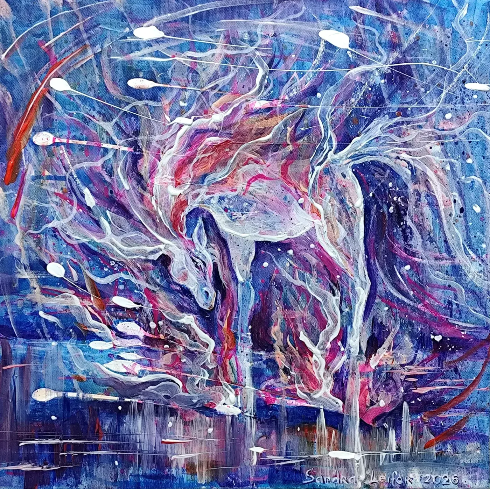
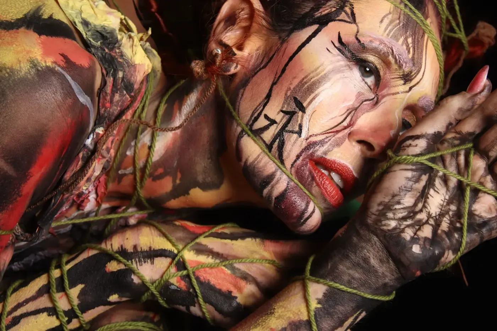
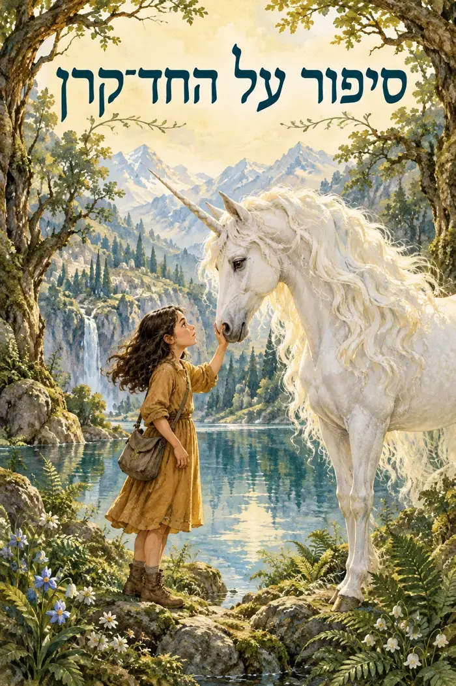

01 / ציוראמנית רב־תחומית
הצבע הוא רק
ההתחלה.
מסע בין בד, גוף ודמיון.
לפעמים על קנבס.
לפעמים על העור.
תמיד מתוך הדמיון.
ציור, בודי־ארט ונוירוגרפיקה נפגשים בעולמה של סנדרה לייפר. כל חומר פותח אפשרות חדשה.
02 — מבחר יצירותעולמות,
עולמות,
בלי גבולות.
מבט מקרוב על הצבע,
הקו והדמות.
העבודות מתוך תיק האמנית בגלריה ״פחות מאלף״.לגלריה ולבירור על יצירות ↗
SANDRA LEIFER
ARTIST / EDUCATOR
ARTIST / EDUCATOR
03 — נעים להכירסנדרה
סנדרה
לייפר.
אמנית ומורה לאמנות, הנעה בין ציור, רישום, נוירוגרפיקה ואיפור אמנותי.
למדה אמנות בירוסלבל שברוסיה. בעבודותיה נפגשים ריאליזם ופנטזיה, קו חופשי וטקסטורות. לצד היצירה, היא מלמדת ילדים ומבוגרים ומנחה סדנאות אמנות.
01
ציור ופנטזיה
02
איפור לתיאטרון ולמופעים
03
סדנאות ונוירוגרפיקה
